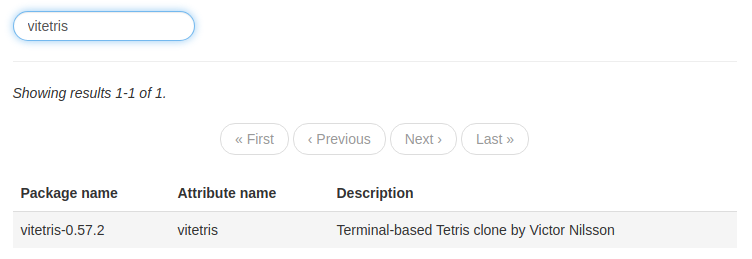

Installing programs
There are many different ways of installing programs on NixOS. In this section, we will cover two methods of installing programs that use the configuration.nix file.
Method 1: Installing programs using the programs attribute
Certain programs can be installed by using the following structure in your configuration.nix file:
programs = {
# Programs go here
};
Only a few programs can be installed this way - these programs can be found here by using the NixOS options search feature, or by using the nix repl:
nix repl '<nixpkgs/nixos>'
nix-repl> builtins.attrNames config.programs
Note
Using this method for installing programs is desirable if possible compared to method 2, as this normally sets the required environment variables for the program to function properly. In addition, various configuration options are available (e.g. adding shell aliases to the fish shell)
Of course, this is only an option if the specific program you want exists in the programs attribute.
Example: Installing and setting up the fish shell
In this example, we enable the program chromium, as well as the fish command. We also add an alias to the du command called dirsize which can be used within the fish shell:
programs = {
chromium.enable = true;
fish = {
enable = true;
shellAliases = [
dirsize = "du -sh"
];
};
};
Method 2: Installing programs using the system packages
Unfree packages
Certain packages are known as
unfree, which means that their license states that they cannot be redistributed (for example, Google Chrome). In order to installunfreepackages, you need to add the following to yourconfiguration.nixfile:nixpkgs.config = { allowUnfree = true; };
This method of installing programs is the primary method of installing programs in NixOS. It basically uses the entire Nixpkgs suite of packages and allows you to choose the packages you want. The general structure in your configuration.nix file will look something like this:
environment.systemPackages = with pkgs; [
# Packages go here
];
Finding packages is a little bit more tricky compared to finding programs in method 1. The following strategies are as follows:
Using the nix search command
Using nix search is the easiest way to find packages for your current version of NixOS. Simply type nix search <packageName> to search for a specific package
$ nix search google chrome
* nixpkgs.google-chrome (google-chrome)
A freeware web browser developed by Google
* nixpkgs.google-chrome-beta (google-chrome-beta)
A freeware web browser developed by Google
* nixpkgs.google-chrome-dev (google-chrome-dev)
A freeware web browser developed by Google
* nixpkgs.python37Packages.PyChromecast (python3.7-PyChromecast)
Library for Python 3.4+ to communicate with the Google Chromecast
To use a package from the nix search command, you must include the package name after nixpkgs, not the name in brackets. This is due to various package 'flavours' being packaged under a single package name.
For example:
environment.systemPackages = with pkgs; [
google-chrome
gnome3.gnome-mahjongg
];
Using the online package search
Using the NixOS package search website, it's easy to find packages. The name required in the system packages from this website is the Attribute name field.

environment.systemPackages = with pkgs; [
vitetris
];